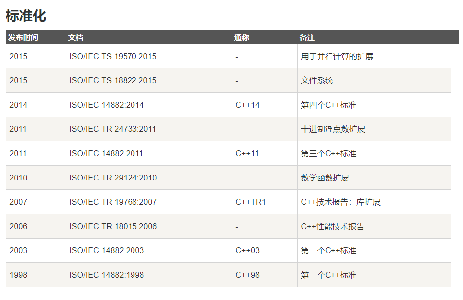
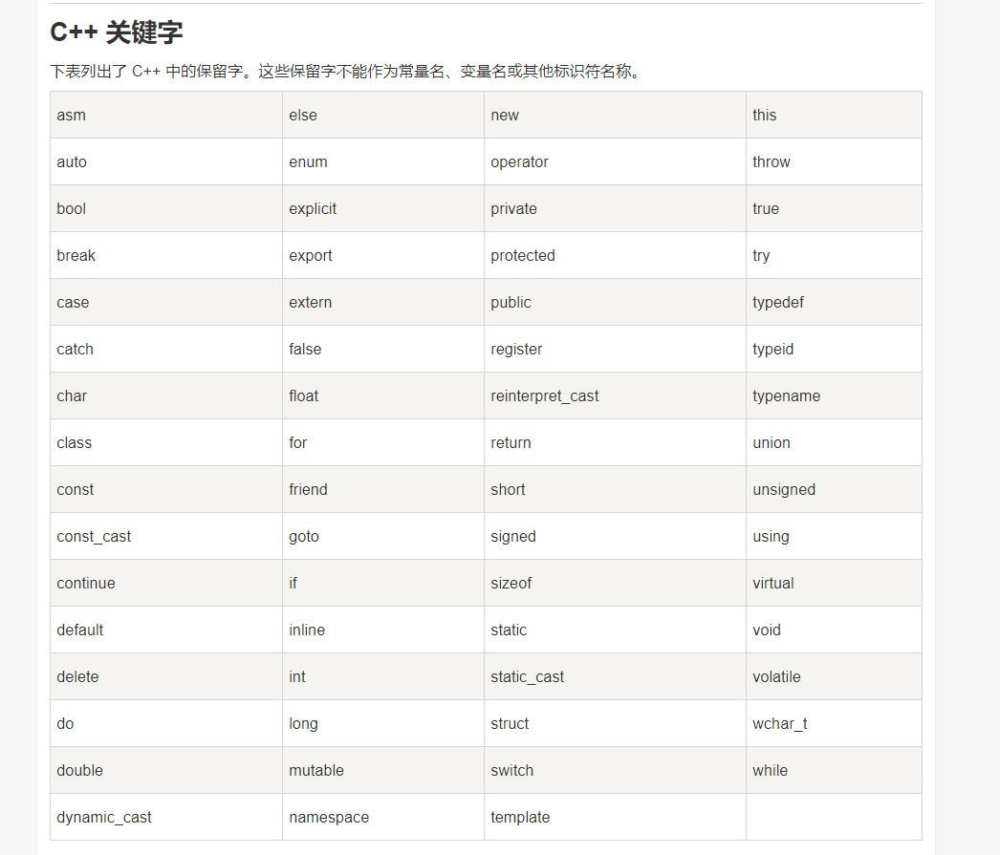

- C++ （主要编写C++特有的，不同与C语言的部分）
C++ （主要编写C++特有的，不同与C语言的部分）
资料来源：菜鸟教程
!!! 建议先看C语言
1. 概述：
C++ 进一步扩充和完善了 C 语言，是一种面向对象的程序设计语言。
C++ 是 C 的一个超集，事实上，任何合法的 C 程序都是合法的 C++ 程序。
C++ 完全支持面向对象的程序设计，包括面向对象开发的四大特性：封装,抽象,继承,多态.

2. 基本语法：
1.第一个C++程序:
#include <iostream> using namespace std; // main() 是程序开始执行的地方 int main() { cout << "Hello World"; // 输出 Hello World return 0; }
讲解程序：
头文件 iostream : 头文件包含了程序中必需的或有用的信息
using namespace std; 告诉编译器使用 std 命名空间。
cout << "Hello World"; 打印输出语句。
return 0; 终止 main( )函数，并向调用进程返回值 0。
在 C++ 中，分号是语句结束符。也就是说，每个语句必须以分号结束。它表明一个逻辑实体的结束。
C++ 是区分大小写的编程语言
2. C++ 标识符:
标识符是用来标识变量、函数、类、模块，或任何其他用户自定义项目的名称。
一个标识符以字母 A-Z 或 a-z 或下划线 _ 开始，后跟零个或多个字母、下划线和数字（0-9）。
C++ 标识符内不允许出现标点字符，比如 @、& 和 %

3.注释：
与C语言注释一样。
4.数据类型：
七种基本的 C++ 数据类型：

部分变量类型：

3. Lambda 函数与表达式：
C++11 提供了对匿名函数的支持,称为 Lambda 函数(也叫 Lambda 表达式)。
Lambda 表达式把函数看作对象。比如可以将它们赋给变量和作为参数传递，还可以像函数一样对其求值。
完整格式：
[capture](parameters) mutable ->return-type{statement}
[capture] 捕捉列表: 能够捕捉上下文中的变量以供Lambda函数使用;
[ ]是Lambda引出符。编译器根据该引出符判断接下来的代码是否是Lambda函数。
(parameters)：形参列表。
mutable修饰符: 在使用该修饰符时，参数列表不可省略（即使参数为空）;
->return-type：返回类型。用于追踪返回类型形式声明函数的返回类型。
{statement}：函数体。内容与普通函数一样，不过除了可以使用参数之外，还可以使用所有捕获的变量。
例如：
[](int x, int y) -> int { int z = x + y; return z + x; }
4. C++数字：
1. 定义数字：
// 数字定义 short s; int i; long l; float f; double d;
2. 数学运算：
引用数学头文件 <cmath>

5. C++ 中的 String 类:
引入 < string > 头文件
DEMO：
#include <iostream> #include <string> using namespace std; int main () { string str1 = "Hello"; string str2 = "World"; string str3; int len ; // 复制 str1 到 str3 str3 = str1; cout << "str3 : " << str3 << endl; // 连接 str1 和 str2 str3 = str1 + str2; cout << "str1 + str2 : " << str3 << endl; // 连接后，str3 的总长度 len = str3.size(); cout << "str3.size() : " << len << endl; return 0; }
1. 把一串数字组成的字符串，对其中的数字进行求和（★★★）
DEMO：
string n; int sum=0; //n的各个位数之和 cin>>"shu ru n: ">>n; for(int i=0;i<n.size();i++){ sum = sum+n[i]-'0' ; //sum是n的各个数之和 } cout<<"sum is "<<sum
运行结果：
shu ru n: 123456789
sum is 45
6. C++ 引用：
引用变量是一个别名，一旦把引用初始化为某个变量，就可以使用该引用名称或变量名称来指向变量。
1. 引用与指针的区别：
- 不存在空引用。引用必须连接到一块合法的内存。可以存在Null指针。
- 一旦引用被初始化为一个对象，就不能被指向到另一个对象。指针可以在任何时候指向到另一个对象。
- 引用必须在创建时被初始化。指针可以在任何时间被初始化。
2. 创建引用：
int i = 17; int& r = i; //& 读作引用
DEMO:
#include <iostream> using namespace std; int main () { // 声明简单的变量 int i; double d; // 声明引用变量 int& r = i; double& s = d; i = 5; cout << "Value of i : " << i << endl; cout << "Value of i reference : " << r << endl; d = 11.7; cout << "Value of d : " << d << endl; cout << "Value of d reference : " << s << endl; return 0; }
3. 把引用作为函数参数:
C++ 支持把引用作为参数传给函数，这比传一般的参数更安全。
DEMO:
// 函数声明 void swap(int& x, int& y); // 函数定义 void swap(int& x, int& y) { int temp; temp = x; /* 保存地址 x 的值 */ x = y; /* 把 y 赋值给 x */ y = temp; /* 把 x 赋值给 y */ return; }
4. 把引用作为函数返回值：
当函数返回一个引用时，则返回一个指向返回值的隐式指针。这样，函数就可以放在赋值语句的左边。
当返回一个引用时，要注意被引用的对象不能超出作用域。
DEMO:
double vals[] = {10.1, 12.6, 33.1, 24.1, 50.0}; double& setValues( int i ) { return vals[i]; // 返回第 i 个元素的引用 } // 要调用上面定义函数的主函数 int main () { cout << "改变前的值" << endl; for ( int i = 0; i < 5; i++ ) { cout << "vals[" << i << "] = "; cout << vals[i] << endl; } setValues(1) = 20.23; // 改变第 2 个元素 setValues(3) = 70.8; // 改变第 4 个元素 cout << "改变后的值" << endl; for ( int i = 0; i < 5; i++ ) { cout << "vals[" << i << "] = "; cout << vals[i] << endl; } return 0; }
运行结果：
改变前的值
vals[0] = 10.1
vals[1] = 12.6
vals[2] = 33.1
vals[3] = 24.1
vals[4] = 50
改变后的值
vals[0] = 10.1
vals[1] = 20.23
vals[2] = 33.1
vals[3] = 70.8
vals[4] = 50
7. 日期 & 时间:
引用头文件 <ctime>
关于日期和时间的重要函数:

8. 基本的输入输出:
I/O 库头文件:

1. 标准输出流（cout）：
cout 是 iostream 类的一个实例，cout 是与流插入运算符 << 结合使用的。
endl 用于在行末添加一个换行符 \n
cout << "Value of str is : " << str << endl;
2. 标准输入流（cin）:
cin 是 iostream 类的一个实例。cin 是与流提取运算符 >> 结合使用的
cout << "请输入您的名称： ";
运算符 >> 在一个语句中可以多次使用:
cin >> name >> age; //相当于下面两个语句 cin >> name; cin >> age;
9. 命名空间:
命名空间: 用来区分不同库中相同名称的函数、类、变量等。
使用了命名空间即定义了上下文。本质上，命名空间就是定义了一个范围。
1. 定义命名空间：
namespace namespace_name { // 代码声明 }
调用带有命名空间的函数或变量，需要在前面加上命名空间的名称:
namespace_name::code; // code 可以是变量或函数
DEMO:
#include <iostream> using namespace std; // 第一个命名空间 namespace first_space{ void func(){ cout << "Inside first_space" << endl; } } // 第二个命名空间 namespace second_space{ void func(){ cout << "Inside second_space" << endl; } } int main () { // 调用第一个命名空间中的函数 first_space::func(); // 调用第二个命名空间中的函数 second_space::func(); return 0; }
运行结果：
Inside first_space
Inside second_space
2. using 指令
可以使用 using namespace 指令，这样在使用命名空间时就可以不用在前面加上命名空间的名称。
这个指令会告诉编译器，后续的代码将使用指定的命名空间中的名称。
DEMO:
#include <iostream> using namespace std; namespace first_space{ void func(){ cout << "Inside first_space" << endl; } } using namespace first_space; int main () { // 调用第一个命名空间中的函数 func(); return 0; }
运行结果：
Inside first_space
3. 嵌套的命名空间:
命名空间可以嵌套，可以在一个命名空间中定义另一个命名空间
namespace namespace_name1 { // 代码声明 namespace namespace_name2 { // 代码声明 } }
// 访问 namespace_name2 中的成员 using namespace namespace_name1::namespace_name2; // 访问 namespace:name1 中的成员 using namespace namespace_name1;
10. 栈的用法:
使用栈，要先包含头文件 ： #include<stack>
栈的定义：
stack <int>stk; //整型栈 stack <string>stk; //字符串栈
栈的基本方法：
s.push(item); //将item压入栈顶 s.pop(); //删除栈顶的元素，但不会返回该元素 s.top(); //返回栈顶的元素，但不会删除 s.size(); //返回栈中元素的个数 s.empty(); //检查栈是否为空，如果为空返回true，否则返回false
PAT算法举例：
DEMO-说反话 :
输入例子:
Hello World Here I Come
输出例子:
Come I Here World Hello
#include <iostream> #include <string> #include<stack> //引入栈的数据结构 using namespace std; int main() { string str; //字符串变量 int a; //记录栈内元素个数 stack<string> stk; do{ cin>>str; //使用cin从键盘输入字符串时，读取到空格就断开 stk.push(str); }while(cin.get()!='\n'); //读入回车符，停止while循环 a=stk.size(); //栈内元素个数 for(int i=0;i<a-1;i++){ //除了栈底元素，其余元素全部输出，后面有空格 cout<<stk.top()<<" "; stk.pop(); //移除栈顶元素，让下一个元素变成栈顶 } cout<<stk.top(); //输出最后一个栈底元素，后面没有空格 return 0; }